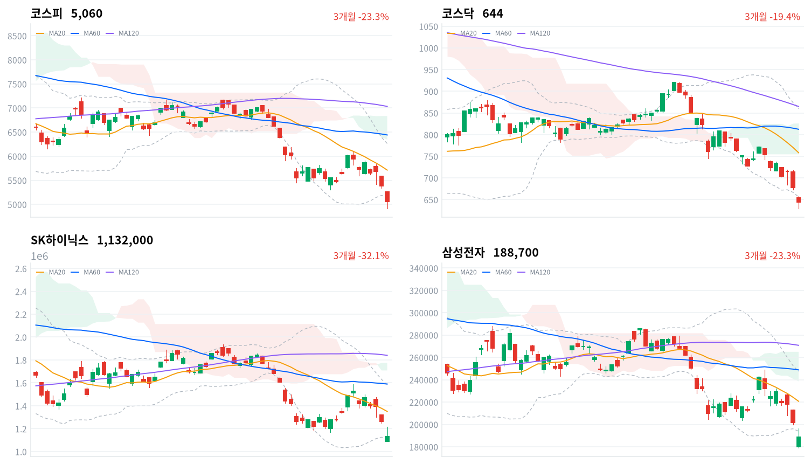

미국 AI 인프라주 급락이 한국 장으로 옮겨 와 코스피가 개장 3분 만에 서킷브레이커로 멈췄고, 외국인은 6거래일째 순매도했다(2조7,211억원, 당일 잠정). 기관이 1조7,050억원을 샀지만 코스피는 6.02% 내린 5,059.69로 마감해, 국내 자금이 지수 하단을 받친다는 11월 5일 판단을 철회한다.
장중 저점에서 되돌린 마감만으로 매도가 끝났다고 보기는 이르다. 11월 9일 외국인 순매수 방향과 코스피가 장중 저점 4,911 위에서 버티는지로 확인한다.
11월 5일 미국 세션의 AI 인프라주 매도가 한국 장에 그대로 옮겨 왔다. 나스닥이 5.52% 내리고 필라델피아 반도체지수가 12% 넘게 떨어져 2020년 이후 최대 낙폭을 냈다는 보도가 나왔다. 코스피는 개장 직후 서킷브레이커로 20분간 거래가 멈췄고, 외국인은 6거래일째 순매도했다. 기관은 1조7,050억원을 순매수해 전날의 두 배 가까이 샀다(당일 잠정).
장 마감 뒤 보도는 하락을 데이터센터 규제 공포가 키운 과도한 반응으로 설명했고, 증권사 리서치 책임자 다수도 규제가 실제 AI 투자 규모에 주는 영향은 제한적이라고 봤다는 보도가 나왔다. 규제가 아직 공약 단계이고 수요가 줄었다는 1차 자료가 없다는 점에는 동의한다. 다만 그 설명은 누가 지수 하단을 받칠지는 답하지 않는다. 기관 순매수 가운데 금융투자가 1조6,146억원, 연기금이 2,885억원이었다는 집계가 나와, 이 매수가 가격을 보고 들어온 장기 수요인지는 투자자 분류만으로 알 수 없다. 같은 보도들이 바닥은 아직이라고 덧붙인 것도 이 점과 같은 방향이다.
장중 저점 4,911에서 150포인트 가까이 되돌린 마감은 서킷브레이커와 사이드카 뒤 매도가 한꺼번에 소진됐다는 신호일 수 있다. 그러나 외국인 순매도는 전날보다 줄었을 뿐 이어졌고, 코스피는 정오 무렵 5,191까지 오른 뒤 오후에 다시 밀려 마감했다. 그래서 국내 매수가 하락 속도를 늦췄을 뿐 하단을 만들지는 못했다고 판단한다. 두 설명은 11월 9일 외국인 순매수 방향과 코스피가 그 저점 위에서 마감하는지로 구분된다. 기관 매수가 어느 업종으로 갔는지는 업종별 순매매 자료가 없어 알 수 없다.
새로 제안할 상품은 없다. 반도체·AI 하드웨어와 전력망 투자 테마는 2거래일 연속 같은 미국 정책 위험에 함께 팔렸고, 이날 한국 정규장 동안 미국 선물은 오히려 강보합이었다. 한국 장의 방향을 정하는 것은 국내 재료보다 미국 정규장의 AI 인프라주 반응이라고 본다. 저점 대비 반등 하루만으로 추세가 바뀌었다고 보기는 이르다. 가장 가까운 결정적 일정은 11월 9일 정규장의 외국인 코스피 순매수 방향과 종가다.
코스피가 11월 6일 기준 볼린저 밴드 하단 5,159 위에서 마감하면, 외국인 매도가 이어지는 동안 국내 매수가 하단을 만들지 못한다는 오늘 판단을 철회한다. 그 경우 장 초반 급락을 매도 소진으로 보는 설명을 우선 설명으로 본다. 반대로 장중 저점 4,911을 종가로 내주면 60일 저점을 새로 쓰게 되고, 하단 미확인 판단을 뒷받침한다.
출처: 디지털데일리, SBS Biz, 뉴스핌, 더리포트, 머니투데이, 네이버증권 주요뉴스
11월 5일 미국 세션에서 나스닥은 5.52%, S&P500은 4.36%, 다우는 3.44% 내렸다. 엔비디아가 9.26%, AMD가 17.3% 떨어졌고, 민주당의 상·하원 장악 뒤 데이터센터 규제가 강해질 것이라는 우려가 계기였다는 보도가 나왔다. 아시아에서는 닛케이(-5.96%)와 대만가권(-4.51%)이 크게 내리고 항셍(-1.27%)과 상해종합(-1.10%)은 덜 내렸다. 코스피는 네 지수 평균보다 2.81%포인트 더 내렸다.
코스피는 전일 종가 5,384보다 2.2% 낮은 5,263에서 출발했고, 시가 직후 5,269가 그날 고가였다. 09시 03분 1단계 서킷브레이커가 발동돼 20분간 거래가 멈췄고, 올해 11번째라는 보도가 나왔다. 09시 34분에는 매도 사이드카도 나왔다. 한국 정규장 동안 미국 선물은 S&P500 선물 +0.01%, 나스닥 선물 +0.48%로 버텨, 한국 장중에 미국 쪽 새 악재가 더해지지는 않았다.
코스피는 장 초반 4,911까지 밀렸다가 정오 무렵 5,191까지 되돌렸고, 오후에 다시 밀려 하루 범위의 아래쪽 5분의 2 지점에서 마감했다. 코스닥은 629~658 범위의 한가운데에서 끝났다. 원화는 장중 약해지는 쪽으로 움직였다.
미국 AI 인프라주 매도가 한국 반도체·AI 서버 부품·전력기기로 번진 날이다. 외국인이 팔고 기관이 받았으며, 반도체 밖 업종도 대부분 내렸다. IT서비스와 인터넷 플랫폼 일부만 거꾸로 올랐다. 시간외 거래 자료는 없어 장 마감 뒤 흐름은 확인하지 못했다.
출처: 디지털데일리, SBS Biz, 스페셜타임스, 뉴스핌, 한국아이닷컴, 뉴스1
두 지수가 5% 넘게 내렸다. 코스피는 6.02% 내린 5,060, 코스닥은 5.03% 내린 644.27로 마감했다. 코스피는 장중 5,000선을 내줬지만 종가로는 지켰다.
| 지수 | 종가 | 등락률 | 시가 | 고가 | 저가 | 전일 종가 |
|---|---|---|---|---|---|---|
| 코스피 | 5,059.69 | -6.02% | 5,263.26 | 5,269.10 | 4,911.28 | 5,383.80 |
| 코스닥 | 644.27 | -5.03% | 654.43 | 657.95 | 629.17 | 678.41 |
장중 저점에서 반등한 힘은 오후까지 이어지지 않았다. 코스피는 저점 대비 280포인트를 되찾은 정오 무렵이 반등의 끝이었고, 마감까지 130포인트 남짓을 다시 내줬다. 코스닥은 시가 갭이 3.5%로 코스피보다 컸지만 장중 낙폭은 작아, 하루 낙폭은 코스피보다 1%포인트 가까이 작았다.
| 주체 | 순매수(억원) |
|---|---|
| 개인 | +5,532 |
| 외국인 | -27,211 |
| 기관 | +17,050 |
| 주체 | 순매수(억원) |
|---|---|
| 개인 | -1,175 |
| 외국인 | -917 |
| 기관 | +2,046 |
외국인 매도는 줄었지만 멈추지 않았고, 받는 쪽은 개인에서 기관으로 바뀌었다. 외국인은 코스피에서 2조7,211억원을 순매도해(전일 3조3,733억원 순매도, 당일 잠정) 6거래일 연속 팔았고, 여섯 세션 합계는 12조552억원이다. 기관은 1조7,050억원(전일 8,819억원), 개인은 5,532억원(전일 2조2,087억원)을 순매수했다.
기관 매수의 대부분은 금융투자였다. 금융투자가 1조6,146억원, 연기금이 2,885억원을 샀다는 집계가 나왔고, 연기금은 오전 10시 무렵 한때 순매도로 돌아서 직전 5거래일 연속 순매수 뒤 처음 매도 우위를 보였다는 보도도 나왔다. 금융투자 분류에는 증권사 자기매매와 ETF 설정이 함께 잡혀, 이 매수의 성격은 투자자 분류만으로 알 수 없다. 보도 집계(외국인 2조7,691억원 순매도)는 집계 시점이 달라 표와 다르고, 전일 값도 이날 다시 받은 잠정치라 지난 글의 외국인 3조4,185억원 순매도와 다르다.
코스닥에서는 기관이 2,046억원을 사고 개인(1,175억원)과 외국인(917억원)이 팔았다. 전날 코스닥을 산 개인이 이날은 판 쪽에 섰다.
장중 누적 수급과 프로그램 매매는 받을 수 있는 자료가 없어 싣지 않는다.
출처: 뉴스핌, 더리포트, 머니투데이
| 순위 | 종목/ETF | 구분 | 거래대금 | 비고 |
|---|---|---|---|---|
| 1 | SK하이닉스 | 개별주 | 8.73조원 | - |
| 2 | 삼성전자 | 개별주 | 6.47조원 | - |
| 3 | 반도체 테마 ETF | 테마·롱 | 2.63조원 | 29종 합산 |
| 4 | 삼성전기 | 개별주 | 1.31조원 | - |
| 5 | 삼성전자우 | 개별주 | 0.81조원 | - |
| 6 | SK스퀘어 | 개별주 | 0.60조원 | - |
| 7 | KODEX CD금리액티브(합성) | 단기금리·현금성 | 0.49조원 | - |
| 8 | SK하이닉스 레버리지 | 단일종목·롱 | 0.43조원 | 5종 합산 |
| 9 | 삼성SDI | 개별주 | 0.41조원 | - |
| 10 | 2차전지 테마 ETF | 테마·롱 | 0.39조원 | 14종 합산 |
단위 백만원 원본을 조 단위로 환산했다. 같은 기초자산 ETF는 방향별로, 같은 테마 섹터 ETF는 테마별로 묶고 지수·해외 ETF는 제외했다.
거래는 하락을 이끈 반도체 두 종목에 더 몰렸다. SK하이닉스(8.73조원)와 삼성전자(6.47조원) 두 종목이 상위 10개 합계의 3분의 2를 넘었고, 반도체 테마 ETF 29종 합산(2.63조원)이 3위였다. 표의 개별주 여섯 종목은 모두 내렸다.
SK하이닉스가 10% 넘게 떨어진 날 그 종목의 단일종목 레버리지(롱) 상품 5종에 합산 0.43조원이 거래돼 상위 10개에 들었다. 하락일에 롱 레버리지 거래가 활발했다는 뜻이지만, 투자자별 자료가 없어 누가 사고 팔았는지는 알 수 없다. 현금성 상품인 KODEX CD금리액티브(합성)도 0.49조원이 거래됐다.
하락은 깊고 넓었다. 대표 ETF 기준 12개 섹터 가운데 11개가 내렸고 소프트웨어(+1.24%)만 올랐다. 반도체(-8.28%)와 증권(-7.52%)이 가장 약했고, 방어 업종으로 여겨지던 은행(-1.51%)과 헬스케어(-3.03%)도 내렸다. 반도체 섹터는 1주 기준 20.00%, 1개월 기준 40.99% 내려 섹터 가운데 가장 약하다.
오른 업종은 좁게 올랐다. IT서비스(+1.15%)는 119종목 가운데 27종목, 양방향미디어와서비스(+1.35%)는 16종목 가운데 4종목만 올라 일부 대형주가 끈 상승이다. 다각화된통신서비스(+1.95%)는 3종목이 모두 올랐다. 내린 쪽에서는 자동차(-2.71%) 12종목이 하나도 오르지 못했고, 조선(-3.87%)은 31종목 가운데 2종목만 올랐다.
반도체 대형주가 2거래일째 급락했다(SK하이닉스 -10.44%, 삼성전자 -6.35%, SK스퀘어 -10.51%, 삼성전자우 -6.30%). 미국 11월 5일 세션에서 필라델피아 반도체지수가 급락하고 SK하이닉스 ADR이 13% 급락했다는 보도가 나왔다.
삼성에스디에스는 급락장에서 올랐다(삼성에스디에스 +6.34%). 보도는 3분기 클라우드 매출 7,961억원(+18%)을 근거로 들며 AI 클라우드·소프트웨어 종목으로 매수가 옮겨 갔다고 봤고, 같은 날 LG씨엔에스(+2.07%)도 올랐다. 이 설명은 한 매체의 보도뿐이다.
인터넷 플랫폼 NAVER가 올랐다(NAVER +2.87%). 확인된 재료는 없다.
AI 서버 부품주가 2거래일째 크게 내렸다(삼성전기 -7.84%, 대덕전자 -10.78%). 반도체 대형주와 함께 팔렸고, 두 회사 모두 회사 고유의 악재는 확인되지 않았다.
전력기기주가 2거래일째 급락했다(효성중공업 -11.95%, LS ELECTRIC -10.25%, 산일전기 -9.28%, HD현대일렉트릭 -8.72%). 전날 미국에서 GE버노바 등 전력 인프라주가 함께 급락했고, 넥스트레이드 프리마켓에서 이미 LS ELECTRIC이 14%대, 효성중공업이 12%대 내렸다는 보도가 나왔다. 보도는 전력 비용 부담과 규제 가능성을 들었지만, 세 회사의 수주 취소·지연 공시는 확인되지 않았다.
묶음 밖에서는 한국금융지주(-17.34%)가 가장 크게 내렸다. 자회사 한국투자증권의 3분기 순이익이 환율 급락 탓에 반토막 났다는 보도가 나왔다. 두산(-11.27%)과 엘앤에프(-12.60%)도 크게 내렸고 롯데렌탈(+10.40%)과 GS건설(+6.44%)은 올랐지만, 이 네 종목은 확인된 재료가 없다.
출처: 디지털데일리, 톱스타뉴스, 파이낸셜뉴스, 네이버증권 주요뉴스
원/달러는 한국장 시간대에 1,354원(09:00)과 1,362원(14:30) 사이에서 움직였고, 15:30 마지막 관측은 1,356원이었다(서울 외환시장 공식 종가 아님). 국고채·회사채 금리와 기준금리는 이날 한국은행 경제통계시스템에서 받지 못해 금리 표를 싣지 않는다.
장 초반이 저점이고 오후 2시 30분이 고점이어서, 원화는 주식 매도가 이어지는 동안 조금씩 약해졌다.
| 미국 참조 지수 | 구분 | 관측 | 등락률 | 업종 내 상승 비율 | 기준일 |
|---|---|---|---|---|---|
| 반도체·AI 하드웨어 | 종목 | SK하이닉스 | -10.44% | – | 11/6 |
| 반도체·AI 하드웨어 | 종목 | 삼성전자 | -6.35% | – | 11/6 |
| 반도체·AI 하드웨어 | 지수 | 대만가권 | -4.51% | – | 11/6 |
| 전력망 | 종목 | HD현대일렉트릭 | -8.72% | – | 11/6 |
| 전력망 | 종목 | LS ELECTRIC | -10.25% | – | 11/6 |
| 전력망 | 종목 | 효성중공업 | -11.95% | – | 11/6 |
| 방산 | 종목 | 한화에어로스페이스 | -2.94% | – | 11/6 |
| 방산 | 종목 | LIG디펜스앤에어로스페이스 | -9.07% | – | 11/6 |
| 산업재 | 업종 | 조선 | -3.87% | 6% | 11/6 |
| 산업재 | 종목 | HD현대중공업 | -3.14% | – | 11/6 |
| 산업재 | 종목 | 삼성중공업 | -4.48% | – | 11/6 |
| 금속·광업 | 업종 | 철강 | -2.93% | 16% | 11/6 |
| 금속·광업 | 업종 | 비철금속 | -2.75% | 20% | 11/6 |
| 금속·광업 | 종목 | POSCO홀딩스 | -3.11% | – | 11/6 |
| 금융 | 업종 | 은행 | -1.74% | 18% | 11/6 |
| 금융 | 종목 | KB금융 | -3.82% | – | 11/6 |
| 금융 | 종목 | 신한지주 | -2.25% | – | 11/6 |
| 소프트웨어 | 업종 | 소프트웨어 | -2.29% | 21% | 11/6 |
| 소프트웨어 | 업종 | IT서비스 | +1.15% | 23% | 11/6 |
| 소프트웨어 | 종목 | NAVER | +2.87% | – | 11/6 |
| 소프트웨어 | 종목 | 카카오 | +0.31% | – | 11/6 |
| 에너지 | 종목 | SK이노베이션 | -4.20% | – | 11/6 |
| 일본 | 지수 | 닛케이 | -5.96% | – | 11/6 |
| 중국 | 지수 | 항셍 | -1.27% | – | 11/6 |
| 중국 | 지수 | 상해종합 | -1.10% | – | 11/6 |
해외주식 펀드의 대기 자금이 달러를 사는 비용은 이날 1,350원대에서 거의 달라지지 않았다. 외국인 순매도가 6거래일째 이어졌는데도 원화는 장중 8원 남짓만 약해져, 해외주식의 원화 환산 가치도 환율보다 미국 주가에 좌우된 날이다. 현금 참고 금리는 이날 자료가 없어 비교하지 못한다.
전력망 투자 테마는 한국에서도 미국과 같은 매도를 2거래일째 맞았다. 효성중공업(-11.95%)·LS ELECTRIC(-10.25%)·HD현대일렉트릭(-8.72%)이 모두 크게 내려, 전날 미국 전력 인프라주의 급락을 한국 장이 그대로 따랐다. 소프트웨어 테마는 한국에서 둘로 나뉘었다. IT서비스 업종(+1.15%)과 NAVER(+2.87%)는 올랐지만 소프트웨어 업종(-2.29%)은 내려, 하드웨어 매도의 반대편에 선 것은 클라우드·플랫폼 일부였다. 미국 정규장에서 소프트웨어가 AI 하드웨어와 다른 방향으로 움직이는지가 두 테마를 다른 위험으로 볼지를 정한다.
정부가 신용융자 담보비율 유지의무를 3개월간 면제하는 담보규제 완화를 내놨다는 보도가 나왔다. 증시안정펀드 투입이나 공매도 한시 제한 같은 추가 조치는 발표되지 않았고, 금융위원회 보도자료 원문은 확인하지 못했다. 여당도 긴급 간담회를 열어 시장 안정과 투자자 보호에 총력을 다하겠다고 밝혔지만 구체적인 수단은 내놓지 않았다.
주가가 떨어져 담보비율이 기준 밑으로 내려간 계좌는 추가 담보를 채우지 못하면 증권사가 주식을 강제로 판다. 유지의무를 면제하면 이 반대매매 물량이 뒤로 밀려 하락이 연쇄적으로 번지는 속도가 늦춰진다. 신용 비중이 높은 코스닥과 개인 선호 종목의 매도 압력은 줄고, 증권사는 담보 부족 위험을 떠안는다. 다만 주가가 더 내리면 미룬 물량이 한꺼번에 나올 수 있다. 이날 증권 섹터(-7.52%)가 반도체 다음으로 약했던 것은 이 부담과 방향이 같지만, 한국투자증권의 실적 부진 보도도 같은 날 나와 원인을 가리지 못한다. 다음 거래일 신용융자 잔고와 반대매매 집계가 이 조치의 효과를 처음 보여 준다. 추가 대책의 발표 일정은 미확정이다.
직전까지는 한국 장이 먼저 내렸지만, 11월 5일 미국 세션에서는 미국 증시가 같은 우려로 급락했다. 나스닥 시가총액이 하루 사이 약 2조5천억달러 줄었다는 보도가 나왔고, 전력 인프라주도 함께 내렸다. 규제는 여전히 주지사 당선자들의 공약 단계이고, 법안이나 행정조치는 확인되지 않았다.
이날 한국에서 메모리·AI 서버 부품·전력기기가 내리고 IT서비스·인터넷 플랫폼이 오른 것은 인허가 지연이 발주를 늦춘다는 구도와 같은 방향이다. 발주가 줄었다는 자료는 아직 없어, 이 움직임은 이익 전망보다 주가 배수에 먼저 반영된 것으로 본다. 다음 분기점은 11월 17일(미국 동부 시간) 엔비디아 실적과 가이던스이며, 새 의회의 법안 발의 일정은 미확정이다.
이란이 미국에 핵협상안을 전달하면서도 7개 조건을 받아들이기 전에는 호르무즈 봉쇄를 풀지 않겠다고 밝혔다는 보도가 나왔다. 협상 타결은 확인되지 않았다. 타결 기대가 유가를 끌어내리면 정유사는 재고평가손실을 맞고, 결렬되면 유가와 정유주가 함께 반등할 수 있다. 이날 SK이노베이션(-4.20%)은 지수보다 덜 내렸다. 정유주 판단은 11월 10일 종가로 확인한다.
출처: 뉴스핌, 네이버증권 주요뉴스, 파이낸셜뉴스
코스피가 11월 5일 기준 20일 저점 5,306 아래인 5,060에서 마감해, 매도가 AI 하드웨어 체인에 몰린 위험 축소이고 반도체 밖 업종과 국내 자금이 지수 하단을 받친다는 11월 5일 판단은 무효화됐다. 조건이 깨져 무효화된 판단을 철회한다. 잘못 본 것은 두 가지다. 국내 자금은 이날도 2조원 넘게 샀지만 하단을 만들지 못했고, 하단을 받친다고 본 은행·헬스케어도 함께 내려 매도는 체인 밖으로 번졌다. 기다린 조건이던 11월 6일 외국인 순매수 방향은 2조7,211억원 순매도(당일 잠정)였다. 사전에 정한 SK하이닉스 상대 수익률 검증도 이날 마감으로 닫혔고, 반도체 급락을 심리 충격으로 본 10월 30일 판단도 철회한다.
| 판단(세운 날) | 오늘 결과 | 상태 |
|---|---|---|
| 반도체 급락은 수요 재평가보다 심리 충격(10월 30일) | SK하이닉스−코스피 -8.46%포인트 | 철회 — 11월 6일 종가로 닫음 |
| 조선 반등은 낙폭 과대 되돌림(11월 2일) | 한화오션 비교값 없음(거래대금 상위 밖) | 판단 보류 — 11월 9일 종가 |
| 정유주 급락은 협상 타결 기대의 선반영(11월 3일) | S-Oil 비교값 없음(거래대금 상위 밖) | 판단 보류 — 11월 10일 종가 |
| 친환경주 급등은 하루 테마 매수(11월 4일) | 한화솔루션−코스피 +4.02%포인트 | 판단 보류 — 11월 11일 종가 |
| 삼성전기 급락은 부품 체인 위험 축소의 과잉(11월 5일) | 삼성전기−코스피 -1.82%포인트 | 판단 보류 — 11월 12일 종가 |
| 전력기기 급락은 위험 축소의 과잉(11월 6일) | 효성중공업 1,577,000원(-11.95%) | 새로 세움 — 11월 13일 종가 |
반도체 판단(10월 30일)은 철회했다. 10월 30일 KRX 종가 대비 SK하이닉스는 20.17% 내려 코스피(-11.71%)보다 8.46%포인트 약했고, 미리 정한 철회 기준(-3%포인트)을 크게 넘었다. 다만 하락의 계기는 원래 판단이 다룬 빅테크의 AI 투자 현금흐름 우려가 아니라 미국 데이터센터 규제 우려였고, 메모리 가격이나 빅테크 설비투자 하향 같은 수요 쪽 자료는 판정일까지 나오지 않았다. 철회 기준을 넘은 방향은 확인했지만, 그 이유가 수요 재평가였는지는 가리지 못했다.
친환경주 판단(11월 4일)은 중간값이 철회 기준 쪽에 있다. 11월 4일 KRX 종가 대비 한화솔루션은 6.96% 내렸지만 코스피(-10.98%)보다 덜 내려 차이가 +4.02%포인트로, 기준(+3%포인트)을 넘어 있다. 판정일은 11월 11일이고, 한화솔루션이 지수보다 덜 내린 것은 법안·실적 같은 새 재료 없이 생긴 차이다. 조선(11월 2일)과 정유주(11월 3일) 판단은 한화오션과 S-Oil이 이날 거래대금 상위 60 종목에 들지 않아 중간 비교값이 없고, 판단을 바꿀 새 재료도 없다. 삼성전기 판단(11월 5일)은 차이가 -1.82%포인트로 ±3%포인트 범위 안이다.
전력기기 판단(11월 6일)은 오늘 세웠다. 출발점은 11월 6일 KRX 종가 효성중공업 1,577,000원, 코스피 5,060이다. 11월 6일 KRX 종가 대비 11월 13일 KRX 종가 기준 효성중공업 수익률이 코스피 수익률보다 3%포인트 넘게 높으면 위험 축소 과잉 해석을 뒷받침한다. 같은 폭 넘게 낮으면 수주 전망 재평가를 더 설득력 있는 설명으로 보고 이 판단을 철회하며, 차이가 그 범위 안이면 어느 쪽으로도 판단하지 않고 닫는다. 한 종목으로 재는 기준이라 LS ELECTRIC·HD현대일렉트릭의 움직임은 반영하지 못하고, 두 자산의 변동성 차이도 보정하지 않았다.
| 항목 | 계산 | 결과 |
|---|---|---|
| SK하이닉스 − 코스피(10월 30일→11월 6일 종가) | (1,132,000 ÷ 1,418,000 − 5,059.69 ÷ 5,730.74) × 100 | −8.46%포인트 |
| 한화솔루션 − 코스피(11월 4일→11월 6일 종가) | (26,050 ÷ 28,000 − 5,059.69 ÷ 5,683.80) × 100 | +4.02%포인트 |
| 삼성전기 − 코스피(11월 5일→11월 6일 종가) | (870,000 ÷ 944,000 − 5,059.69 ÷ 5,383.80) × 100 | −1.82%포인트 |
| 시점 | 확인할 것 | 가르는 판단 |
|---|---|---|
| 11월 9일 종가 | 외국인 방향·코스피 4,911 유지, 한화오션−코스피 차 | 하단 미확인인가, 조선 되돌림인가 |
| 11월 10일 종가 | S-Oil−코스피 수익률 차(11월 3일 대비) | 협상 기대 선반영인가 |
| 11월 11일 종가 | 한화솔루션−코스피 수익률 차(11월 4일 대비) | 테마 매수인가, 실적 재평가인가 |
| 11월 12일 종가 | 삼성전기−코스피 수익률 차(11월 5일 대비) | 부품주 과잉 매도인가 |
| 11월 13일 종가 | 효성중공업−코스피 수익률 차(11월 6일 대비) | 전력기기 과잉 매도인가, 수주 재평가인가 |
| 11월 17일(미국 동부) | 엔비디아 실적·가이던스 | 위험 축소인가, 수요 재평가인가 |
다음 거래일 신용융자 잔고·반대매매 집계, 11월 18일 공정위의 네이버파이낸셜–두나무 결합 심의, 11월 26일 금통위도 일정에 있다.

코스피·코스닥·SK하이닉스·삼성전자 3개월 일봉에 이동평균(20·60·120)·볼린저밴드·일목균형표 구름대를 겹쳐 그렸다. 상승 캔들은 녹색, 하락 캔들은 적색이다.
| 자산 | 위치(이평·구름) | 가까운 저항 | 가까운 지지 |
|---|---|---|---|
| 코스피 | 볼린저 하단·세 이동평균·구름 아래(역배열) | 볼린저 하단 5,159 → 전환선 5,506 | 20일 저점 4,911 |
| 코스닥 | 볼린저 하단·세 이동평균·구름 아래(역배열) | 볼린저 하단 656 → 전환선 701 | 20일 저점 629 |
| SK하이닉스 | 세 이동평균·구름 아래(역배열) | 없음 | 볼린저 하단 112만원 → 20일 저점 109만원 |
| 삼성전자 | 볼린저 하단·세 이동평균·구름 아래(역배열) | 볼린저 하단 19만4천원 | 20일 저점 17만9천원 |
코스피는 볼린저 밴드 하단(5,159) 아래에서 마감해 밴드 밖으로 밀려났고, 세 이동평균과 구름 아래 역배열에 머물렀다. 위로는 밴드 하단을 종가로 되찾는지가 첫 관문이고, 아래로는 이날 장중 저점이자 60일 저점이 가장 가까운 지지다. SK하이닉스는 볼린저 하단(112만원) 바로 위에서 끝났고, 삼성전자는 하단(19만4천원) 아래로 내려갔다.
위 레벨은 이동평균·볼린저밴드·일목균형표와 스윙 고저를 11월 6일 종가로 기계적으로 계산한 값이며 투자 권유가 아니다. 종가에서 10% 넘게 떨어진 레벨은 싣지 않았다.